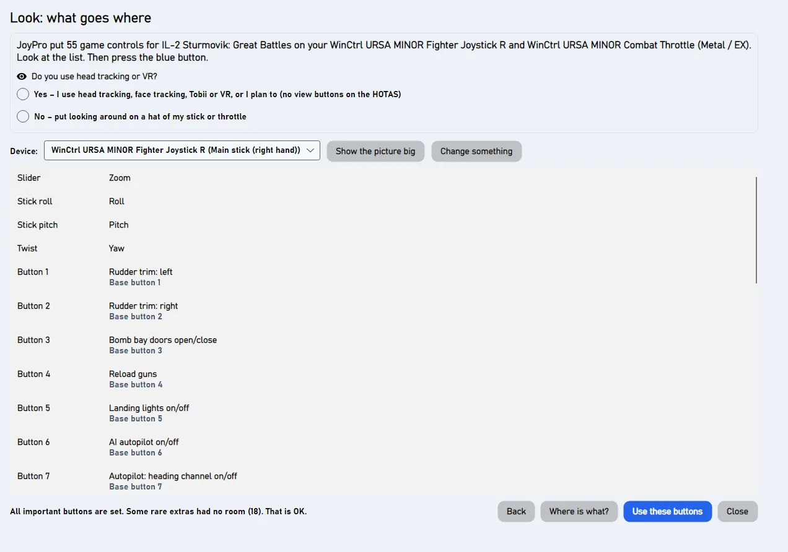
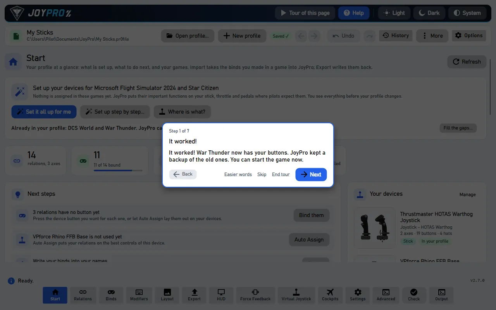

Szeretné, hogy a botkormánya működjön a játékában. Nem szeretné előbb megtanulni a JoyPro használatát. Ez az oldal Önnek szól.
A JoyPro megnézi a botkormányát, gázkarját és pedáljait. Magától ráteszi a fontos játékvezérléseket. Ön megnézi az eredményt, és rákattint két kék gombra. Ennyi az egész.
- Minden beállítása helyettem
a Kezdőlapon - Ezen gombok használata
az új ablakban - Írás a játékomba
a következő kék gomb - Repüljön
indítsa el a játékát
#Mielőtt elkezdi
- Töltse le a JoyPrót, és csomagolja ki: Letöltés és telepítés.
- Csatlakoztassa a botkormányát, gázkarját és pedáljait.
- Indítsa el egyszer a játékát, majd zárja be. Néhány játék csak ekkor hozza létre a vezérlőfájljait.
- Tartsa bezárva a játékot, amíg a JoyPro ír bele.
#A gyors út lépésről lépésre
- Indítsa el a JoyPrót. Az első alkalommal egy ablak mutatja a játékait. Nyomja meg a Kész, és minden beállítása helyettem gombot. Ekkor a 2. lépést kihagyhatja.
- Nyomja meg a Minden beállítása helyettem gombot. A Kezdőlapon, az „Eszközök beállítása” kártyán találja. Ugyanezt teszi a Csak működjön a botkormányom válasz az üdvözlésre (a JoyPro első kérdése az első indítás után).
- Nézze meg a listát. Megmondja, mit csinál az egyes gomb, például „4-es gomb: Fegyverek újratöltése”. A Kép nagyban megmutatja a botkormányát minden gombbal.
- Nyomja meg az Ezen gombok használata gombot. Most a JoyPro tudja a gombjait. A játéka még nem változik.
- Nyomja meg az Írás a játékomba gombot. Most a játéka tudja a gombjait. A JoyPro megtartja a régiek másolatát.
- Repüljön. A Kezdőlapon ez áll: „Sikerült!”. Indítsa el a játékát, és repüljön.



Egyszerre csak egy gomb kék. Kattintson a kékre, és a következő válik kékké.
#A fejkövetésre vonatkozó kérdés
Repülőszimulátornál a lista megkérdezi: Használ fejkövetést vagy VR-t? Válaszoljon Igen-nel, ha a fejét mozgatva néz körül (TrackIR, arckövető webkamera, Tobii vagy VR), vagy ezt tervezi. Ekkor a botkormányára nem kerülnek nézőgombok, csak a „nézet középre állítása”. Válaszoljon Nem-mel, ha a botkormánnyal néz körül: a körülnézést egy Hat kapja. Lásd: Fejkövetés és körülnézés.
„Minden fontos gomb be van állítva. Néhány ritka extrának nem jutott hely (18). Ez így rendben van.” Ez jó hír. A botkormányán kevesebb gomb van, mint ahány vezérlője a játéknak. A fontosak mind a botkormányán vannak.
#A játéknak már vannak gombjai
Beállított már korábban gombokat a játékban? Akkor az Írás a játékomba egy kérdést tesz fel:
| Válasz | Mi történik |
|---|---|
| Az újak használata | A JoyPro gombjai lecserélik a régieket. A JoyPro megtartja a régiek másolatát. |
| A régiek megtartása is | Az új gombjai a régiek mellé kerülnek. Semmi sem törlődik. |
| Mégse | Semmi sem íródik. Ha készen áll, nyomja meg újra az Írás a játékomba gombot. |



#ACE COMBAT és más, csak Xbox-kontrollert ismerő játékok
Az ACE COMBAT 8 és a Hell Let Loose: Vietnam csak az Xbox-kontrollert ismeri. A botkormányát nem látják. A JoyPro a botkormányát utánzott kontrollerré (virtuális Xbox-kontrollerré) alakítja. Ezekbe a játékokba semmi sem íródik.
- Minden beállítása helyettem
aztán Ezen gombok használata - Utánzott kontroller beállítása
a második kék gomb - Teszt
mozgassa a botkormányát - Indítsa el a játékot
várja meg a címképernyőt - Alt+Tab, Indítás
aztán Alt+Tab vissza
- Nyomja meg a Minden beállítása helyettem, majd az Ezen gombok használata gombot.
- A következő kék gomb az Utánzott kontroller beállítása. Megnyílik a Virtuális joystick oldal.
- Az első alkalommal szüksége van egy ingyenes segédprogramra, a ViGEmBus-ra. Jelölje be a licenc alatti négyzetet. Ezután nyomja meg a ViGEmBus telepítése gombot. A Windows engedélyt kér: kattintson az Igen gombra.
- Nyomja meg a Teszt gombot. Mozgassa a botkormányát. A kontroller képe is mozog.
- Indítsa el a játékot. Várja meg a címképernyőt.
- Tartsa lenyomva az Alt billentyűt, és nyomja meg a Tab billentyűt. Visszatért a JoyPróba. Nyomja meg az Indítás gombot.
- Nyomja meg újra az Alt+Tab billentyűket. Újra a játékban van. Repüljön!
Az Indítás gombot csak akkor nyomja meg, amikor a játék a címképernyőt mutatja. Túl korán? A JoyPro azt írja: „Túl korán”. Nyomja meg a Leállítás, majd az Indítás gombot. Ezt minden játék alkalmával tegye meg.
Bővebben ezekről a játékokról: Csak Xbox-kontrollert ismerő játék HOTAS-szal és ACE COMBAT.
#Valami nem sikerült?
- Nem található játék vagy botkormány. Csatlakoztassa a botkormányát, vagy indítsa el egyszer a játékát. Ezután nyomja meg az Újra gombot.
- Többet szeretne saját maga kiválasztani. Nyomja meg a Beállítás lépésről lépésre gombot. Ez megnyitja a beállítási varázslót az összes lépésével.
- Vissza szeretné kapni a régi gombokat. Lásd: A gyors beállítás visszavonása.
- Egy dologhoz másik gombot szeretne. Lásd: Egy gomb későbbi módosítása.
#Egyszerű szavak
Nagy betűket és nagyon rövid mondatokat szeretne? Jelölje be az üdvözlésben vagy az első ablakban az Egyszerű szavak: nagy betűk, rövid mondatok lehetőséget. Minden bemutatókártyán van Egyszerűbb szavak is. Lásd: Egyszerű szavak, bemutatók és F1.
#Mit csinál a gyors beállítás
- Ez a magától futó beállítási varázsló. Az alapértékeit használja: az eszközeit és azok szokásos feladatait, minden repülőgép egyenrangú, nincs módosító.
- Csak azokat a játékokat állítja be, ahol még semmi sincs a botkormányain. A Kezdőlap kártyája megnevezi őket: „Eszközei beállítása a War Thunderhez és a Star Citizenhez”.
- A Hová kerüljenek a funkciók? a varázslóban tett utolsó választásából származik (először a középső). Lásd: Hová kerüljenek a funkciók?.
- Egy eszközt, amelyet a JoyPro nem ismer, a fajtája szokásos eszközeként állít be. A botkormány mozgatása kormányoz, az 1. gomb tüzel, az első Hat trimmel, az első kar a gázkar. A felső doboz ezt jelzi is.
- A Módosítás megmutatja az eszközöket: egy funkció áthelyezése, cseréje vagy kihagyása, és visszatétele. Azt is megmutatja, mi nem fért el.
- Azok a játékok, amelyekben saját maga készített kiosztásokat, a kártya alatt szerepelnek. Az Importálás, majd a hézagok kitöltése előbb átveszi a kiosztásait; ezután a beállítás csak a szabad vezérlőket használja. A profiljában már szereplő játékok a Hézagok kitöltése... lehetőséget kapják.
- Az Ezen gombok használata egy lépés a profilelőzményekben. Egyetlen Visszavonás (Ctrl+Z) mindent visszavon.
- Az Írás a játékomba ezeknek a játékoknak az exportálása. Előbb biztonsági mentést készít a játékfájlokról, mint az Exportálás oldal.
- Utána egy rövid bemutató megmutatja, hol változtathat meg később egy gombot. A végén ez áll: „Kész! Indítsa el a játékát”.
#A gyors beállítás a háttérben
A gyors út megjelenítés nélkül futtatja a varázsló motorlépéseit: engine setup devices, engine setup aircraft és engine setup plan az áttekintésig. Az Ezen gombok használata a engine setup apply parancsot futtatja (egy profilverzió). Az Írás a játékomba a játék exportálását futtatja az Exportálás oldal beállításaival és biztonsági mentésével. Csak kontrollert ismerő játékoknál ehelyett a Virtuális joystick oldalt nyitja meg; a táblázatuk a engine vjoy map parancsból származik. GUI: QuickSetupCommand a Kezdőlapon, StartQuickSetupAsync (MainWindowViewModel.AutoSetupStart.cs), az ablak: Views/SetupWizardWindow.axaml.
#Kapcsolódó
- Az első profilja 10 perc alatt: a gyors út és a kézi út
- Súgó mód és bemutatók: az üdvözlés és a válaszai
- Súgó és GYIK